The following topics will help you become more familiar in using the Calculator control.
The Calculator control has a display text area on its top corner, which displays all the digits and the calculations performed on the calculator. This display area is displayed by default. To hide this display area, set the ShowDisplayArea property to false.
The below properties controls the behavior of the display area.
|
Calculatorcontrol Properties |
Description |
|
DisplayTextAlign |
Specifies the text alignment in the display text area. The values are Right, Left and Center. By default, it is set to Right. |
|
Font |
Sets font style for display text in the textbox control. |
|
DoubleValue |
Sets the value of the Calculator control as double value. The default value is zero. |
|
[C#]
this.calculatorControl1.DisplayTextAlign = System.Windows.Forms.HorizontalAlignment.Left; this.calculatorControl1.DoubleValue = 5; this.calculatorControl1.Font = new System.Drawing.Font("Verdana", 8.25F, System.Drawing.FontStyle.Bold); |
|
[VB.NET]
Me.calculatorControl1.DisplayTextAlign = System.Windows.Forms.HorizontalAlignment.Left Me.calculatorControl1.DoubleValue = 5 Me.calculatorControl1.Font = New System.Drawing.Font("Verdana", 8.25F, System.Drawing.FontStyle.Bold) |
Figure 188: DisplayTextAlign = "Left"; DoubleValue = "5"; Font = "Verdana, 8, Bold"
TextBox Value
The behavior of the TextBox value can be controlled using the below properties.
|
Calculatorcontrol Properties |
Description |
|
Culture |
Specifies the culture that is used for formatting the currency display. |
|
RepeatAssignAction |
Indicates whether the assignment action (=) will repeat the previous action. Whenever the user assigns an action in the calculator at run time and clicks "=" button, the result will be displayed in the textbox area. If the user clicks the "=" button again, the assigned action will be repeated, with the existing result, only when RepeatAssignAction property is set to true. By default it is true. |
|
UseUserOverride |
Indicates whether the NumberFormatInfo used for formatting will use UseUserOverride parameter for CultureInfo. |
|
[C#]
this.calculatorControl1.Culture = new System.Globalization.CultureInfo("en-US"); this.calculatorControl1.RepeatAssignAction = true; this.calculatorControl1.UseUserOverride = true; |
|
[VB.NET]
Me.calculatorControl1.Culture = New System.Globalization.CultureInfo("en-US") Me.calculatorControl1.RepeatAssignAction = True Me.calculatorControl1.UseUserOverride = True |
See Also
How to customize the calculator display text area to use NumberGroupSeparator?
This section will walk you through the different appearance settings for the Calculator control.
· Layout Modes - Layout of the components in a Calculator.
· Background Settings - Background settings for the control.
· Border Styles - Border for the control.
· Button Spacing - Spacing between the Calculator buttons.
· Button Foreground - Foreground settings for the buttons.
The Calculator control can be laid out in the following modes.
· WindowsStandard Mode - Modeled with windows standard layout(Default) and
· Financial Mode - Modeled with windows financial layout.
|
[C#]
this.calculatorControl1.LayoutType = Syncfusion.Windows.Forms.Tools.CalculatorLayoutTypes.Financial; |
|
[VB.NET]
Me.calculatorControl1.LayoutType = Syncfusion.Windows.Forms.Tools.CalculatorLayoutTypes.Financial |
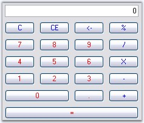
Figure 189: Financial Standard Layout Mode
 Note: We can set different button styles
for the Calculator control, using CalculatorControl.ButtonStyle property. Refer
Themes and Button Styles topic to know more. ButtonStyles can be applied
to both the layout modes.
Note: We can set different button styles
for the Calculator control, using CalculatorControl.ButtonStyle property. Refer
Themes and Button Styles topic to know more. ButtonStyles can be applied
to both the layout modes.
3.3.2.3.3.2.2 Background Settings
Background settings for a Calculator control is discussed in this section.
Background Color
The background of the Calculator can be painted using the below properties.
|
Calculatorcontrol Properties |
Description |
|
BackColor |
Specifies BackColor of the Calculator control. |
|
BackgroundColor |
Sets the gradient background for the control. This setting overrides the BackColor property. |
|
[C#]
this.calculatorControl1.BackColor = System.Drawing.Color.WhiteSmoke; this.calculatorControl1.BackgroundColor = new Syncfusion.Drawing.BrushInfo(Syncfusion.Drawing.GradientStyle.Vertical, System.Drawing.Color.WhiteSmoke, System.Drawing.Color.SlateGray); |
|
[VB.NET]
Me.calculatorControl1.BackColor = System.Drawing.Color.WhiteSmoke Me.calculatorControl1.BackgroundColor = New Syncfusion.Drawing.BrushInfo(Syncfusion.Drawing.GradientStyle.Vertical, System.Drawing.Color.WhiteSmoke, System.Drawing.Color.SlateGray) |
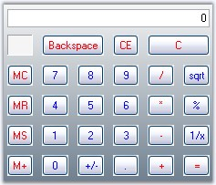
Figure 190: GradientStyle = "Vertical"; BackColor = "WhiteSmoke"; BackgroundColor = "SlateGray"
Background Image
The background of the Calculator control can be filled with an image using BackgroundImage property.
|
[C#]
this.calculatorControl1.BackgroundImage = ((System.Drawing.Image)(resources.GetObject("calculatorControl1.BackgroundImage"))); this.calculatorControl1.BackgroundImageLayout = System.Windows.Forms.ImageLayout.Center; |
|
[VB.NET]
Me.calculatorControl1.BackgroundImage = DirectCast((resources.GetObject("calculatorControl1.BackgroundImage")), System.Drawing.Image) Me.calculatorControl1.BackgroundImageLayout = System.Windows.Forms.ImageLayout.Center |
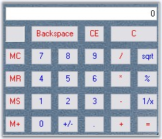
Figure 191: Background Image for Calculator
The below property will let you specify the border style for the Calculator control.
|
Calculatorcontrol Properties |
Description |
|
BorderStyle |
Specifies the 3D border style for the control. The options are,
· RaisedOuter · RaisedInner · SunkenOuter · SunkenInner · Raised · Sunken · Etched · Flat · Adjust · Bump |
|
[C#]
this.calculatorControl1.BorderStyle = System.Windows.Forms.Border3DStyle.Etched; |
|
[VB.NET]
this.calculatorControl1.BorderStyle = System.Windows.Forms.Border3DStyle.Etched; |
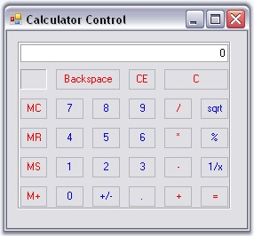
Figure 192: BorderStyle = "Etched"
The default spacing between the Calculator buttons can be modified by enabling UseVerticalAndHorizontalSpacing property. The below properties controls the horizontal and vertical spacing.
|
Calculatorcontrol Properties |
Description |
|
UseVerticalAndHorizontalSpacing |
Specifies whether horizontal and vertical spacing can be set using HorizontalSpacing and VerticalSpacing properties. By default it is false. |
|
HorizontalSpacing |
Sets horizontal spacing between buttons. The default value is 10. UseVerticalAndHorizontalSpacing must be set to true. |
|
VerticalSpacing |
Sets vertical spacing between buttons. The default value is 10. UseVerticalAndHorizontalSpacing must be set to true. |
|
[C#]
this.calculatorControl1.UseVerticalAndHorizontalSpacing = true; this.calculatorControl1.HorizontalSpacing = 5; this.calculatorControl1.VerticalSpacing = 5; |
|
[VB.NET]
Me.calculatorControl1.UseVerticalAndHorizontalSpacing = True Me.calculatorControl1.HorizontalSpacing = 5 Me.calculatorControl1.VerticalSpacing = 5 |
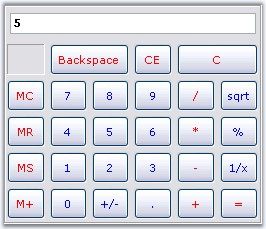
Figure 193: HorizontalSpacing = "5"; VerticalSpacing = "5"
3.3.2.3.3.2.5 Button Foreground
Using SetButtonFont and SetButtonColor properties, we can set the font style and color for the button text. The button can be identified using CalcActions enumerator.
|
Calculatorcontrol Methods |
Description |
|
SetButtonColor |
Sets text color for the calculator button. The parameters are,
caCalcButton - The calculator button, color - The color to set for the button text. |
|
SetButtonFont |
Sets the font style for the text in the calculator button. The parameters are,
caCalcButton - The calculator button, font - The font style for the button text. |
|
[C#]
this.calculatorControl1.SetButtonColor(CalcActions.CalcSpecialBackspace, Color.Black); this.calculatorControl1.SetButtonFont(CalcActions.CalcSpecialBackspace, new Font("Arial", 9, FontStyle.Bold)); |
|
[VB.NET]
Me.calculatorControl1.SetButtonColor(CalcActions.CalcSpecialBackspace, Color.Black); Me.calculatorControl1.SetButtonFont(CalcActions.CalcSpecialBackspace, New Font("Arial", 9, FontStyle.Bold)) |
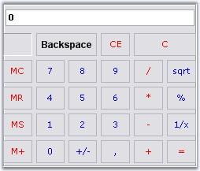
Figure 194: Backspace Button text Font Arial, 9, Bold; Color="Black"
This section elaborated keyboard support for the control.
3.3.2.3.3.3.1 Keyboard Support
Essential Tools Calculator control does the functionality of a normal calculator, using the Mouse or Keyboard, at run time. The control provides Keyboard equivalents for the Calculator buttons. They are listed in the below table.
|
Button |
Description |
Keyboard Equivalent |
|
Backspace |
Deletes the last digit of the displayed number. |
BACKSPACE |
|
CE |
Clears the displayed number. |
DELETE |
|
C |
Clears the current calculation. |
ESC |
|
MC |
Clears any number stored in memory. |
CTRL+L |
|
7 |
Puts this number in the calculator display. |
7 |
|
8 |
Puts this number in the calculator display. |
8 |
|
9 |
Puts this number in the calculator display. |
9 |
|
/ |
Divides. |
/ |
|
sqrt |
Calculates the square root of the displayed number. |
@ |
|
MR |
Recalls the number stored in memory. The number remains in memory. |
CTRL+R |
|
4 |
Puts this number in the calculator display. |
4 |
|
5 |
Puts this number in the calculator display. |
5 |
|
6 |
Puts this number in the calculator display. |
6 |
|
* |
Multiplies. |
* |
|
% |
Displays the result of multiplication as a percentage. Enter on number, click , enter the second number, and then click %. For example, 50 * 25 % will display 12.5.
You can also perform operations with percentages. Enter one number, click the operator(+, -, *, or /), enter the second number, click % and then click =.
For example: 50 + 25% (of 50) = 62.5. |
% |
|
MS |
Stores the displayed number in memory. |
CTRL+M |
|
1 |
Puts this number in the calculator display. |
1 |
|
2 |
Puts this number in the calculator display. |
2 |
|
3 |
Puts this number in the calculator display. |
3 |
|
- |
Subtracts. |
- |
|
1/x |
Calculates the reciprocal of the displayed number. |
R |
|
M+ |
Adds the displayed number to any number already in memory but does not display the sum of these numbers. |
CTRL+P |
|
+/- |
Changes the sign of the displayed number. |
F9 |
|
. |
Inserts a decimal point. To use a different character for the decimal point, click start, point to settings, and then click control panel. Double click Regional Options and then click the Numbers tab. |
. or , |
|
+ |
Adds. |
+ |
|
= |
Perform any operation on the previous two numbers. To repeat the last operation, click = again. |
Enter |
This section discusses on the following styles:
3.3.2.3.3.4.1 Button Flat Styles
The flat styles for the button objects in a Calculator control is set using CalculatorControl.FlatStyle property. The styles are Flat, Popup, Standard (default) and System.
|
[C#]
this.calculatorControl1.FlatStyle = System.Windows.Forms.FlatStyle.Flat; |
|
[VB.NET]
Me.calculatorControl1.FlatStyle = System.Windows.Forms.FlatStyle.Flat |
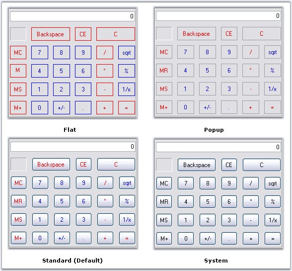
Figure 195: Flat Styles set for Calculator Control
3.3.2.3.3.4.2 Themes and Button Styles
Themes for the Calculator control
Essential Tools Calculator control is themed by default. To disable, set ThemesEnabled property to false.
|
[C#]
this.calculatorControl1.ThemesEnabled = false; |
|
[VB.NET]
Me.calculatorControl1.ThemesEnabled = False |
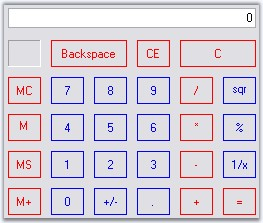
Figure 196: Calculator Control Without Themes
Button Styles
The Calculator control supports the below button styles. UseVisualStyle property should be set to true to enable button styles for the control.
· Classic (default)
· Office2000
· WindowsXP
· OfficeXP
· Office2003
· Office2007
|
[C#]
this.calculatorControl1.UseVisualStyle = true; //Setting Office2007 button style for the calculator control this.calculatorControl1.ButtonStyle = Syncfusion.Windows.Forms.ButtonAppearance.Office2007; |
|
[VB.NET]
Me.calculatorControl1.UseVisualStyle = True 'Setting Office2007 button style for the calculator control this.calculatorControl1.ButtonStyle = Syncfusion.Windows.Forms.ButtonAppearance.Office2007; |
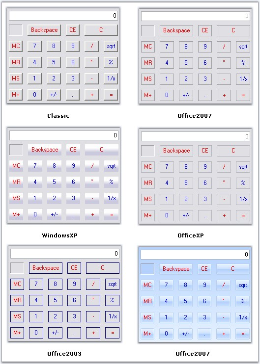
Figure 197: ButtonStyles for Calculator Control
OfficeColor Schemes
Essential Tools Calculator control supports all the three OfficeColorSchemes. When the ButtonStyle is set to Office2007 style, the color schemes will be blue by default. It can be modified using Office2007Theme property.
|
[C#]
this.calculatorControl1.Office2007Theme = Syncfusion.Windows.Forms.Office2007Theme.Silver; |
|
[VB.NET]
Me.calculatorControl1.Office2007Theme = Syncfusion.Windows.Forms.Office2007Theme.Silver |
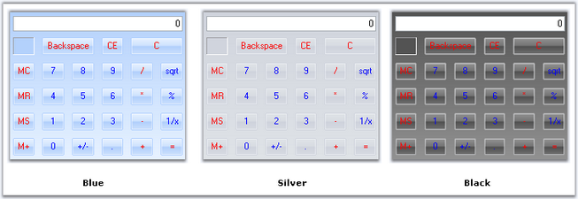
Figure 198: OfficeColor Schemes applied to Calculator Control
Custom Colors
We can also apply custom colors to the Calculator control by setting Office2007Theme to "Managed" and specifying the custom color through the ApplyManagedColors method as follows.
|
[C#]
this.calculatorControl1.Office2007Theme = Syncfusion.Windows.Forms.Office2007Theme.Managed; Office2007Colors.ApplyManagedColors(this, Color.Navy); |
|
[VB.NET]
Me.calculatorControl1.Office2007Theme = Syncfusion.Windows.Forms.Office2007Theme.Managed; Office2007Colors.ApplyManagedColors(Me, Color.Navy) |
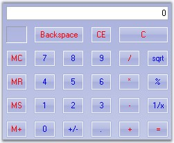
Figure 199: CustomColor = "Navy"
The PopupCalculator class can be used to display a popup Calculator control. This class can be created programmatically.
The PopupCalculator control lets you embed a Calculator control object to a button for example. Drop the button onto the form and add the following code snippet.
|
[C#]
private Syncfusion.Windows.Forms.Tools.PopupCalculator popupCalculator1;
private void buttonAdv1_Click(object sender, EventArgs e) { // Create the Popup Calculator. popupCalculator1 = new Syncfusion.Windows.Forms.Tools.PopupCalculator();
// The control that will act as the Popup's parent. this.popupCalculator1.ParentControl = this.button1;
// Set the alignment. this.popupCalculator1.PopupCalculatorAlignment = Syncfusion.Windows.Forms.Tools.CalculatorPopupAlignment.Right;
// Display the Calculator control. this.popupCalculator1.DisplayCalculator(Point.Empty);
//Sets the size of the calculator this.popupCalculator1.Size = this.calculatorControl1.Size; } |
|
[VB.NET]
Private popupCalculator1 As Syncfusion.Windows.Forms.Tools.PopupCalculator
Private Sub buttonAdv1_Click(ByVal sender As Object, ByVal e As EventArgs) ' Create the Popup Calculator. popupCalculator1 = New Syncfusion.Windows.Forms.Tools.PopupCalculator()
' The control that will act as the Popup's parent. Me.popupCalculator1.ParentControl = Me.button1
' Set the alignment. Me.popupCalculator1.PopupCalculatorAlignment = Syncfusion.Windows.Forms.Tools.CalculatorPopupAlignment.Right
' Display the Calculator control. Me.popupCalculator1.DisplayCalculator(Point.Empty)
'Sets the size of the calculator Me.popupCalculator1.Size = Me.calculatorControl1.Size End Sub |
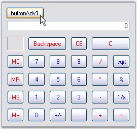
Figure 200: Calculator Control Using PopupCalculator Class